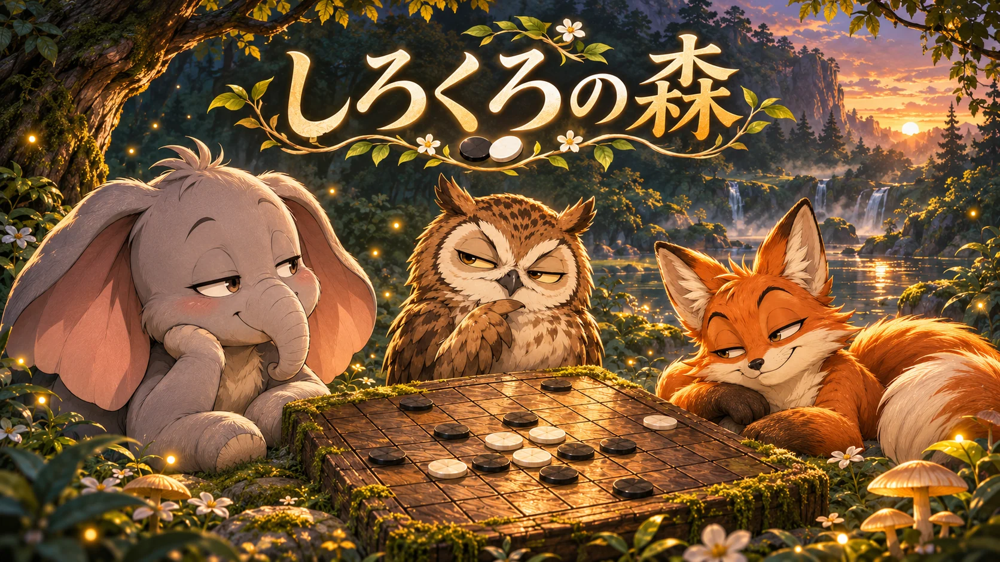

作品概要
勝っても、負けても。森の仲間とリバーシを楽しみ、少しずつ自分の手を振り返るゲームです。
しろくろの森は、ゾウ、フクロウ、キツネの3匹から対戦相手を選び、8×8の盤面でリバーシを楽しむブラウザーゲームです。キャラクターの反応や対局後の振り返りを通して、自分の選択を見直すことができます。
ゲーム / リバーシ / 対局と振り返り
森の仲間と対局し、一手ずつ振り返りながら楽しむリバーシ。
勝っても、負けても。森の仲間とリバーシを楽しみ、少しずつ自分の手を振り返るゲームです。

Quick Look
勝っても、負けても。森の仲間とリバーシを楽しみ、少しずつ自分の手を振り返るゲームです。
しろくろの森は、ゾウ、フクロウ、キツネの3匹から対戦相手を選び、8×8の盤面でリバーシを楽しむブラウザーゲームです。キャラクターの反応や対局後の振り返りを通して、自分の選択を見直すことができます。
のんびりしたゾウ、指南役のフクロウ、負けず嫌いのキツネ。それぞれの仲間を相手に、通常のリバーシのルールで遊べます。フクロウとキツネには強さの選択肢もあります。
着手できる場所の表示、自動パス、終局処理に対応。着手や局面の変化に合わせたリアクションも楽しめます。
対局後は、自分が実際に打った手と解析が選んだ候補について、その後の展開を盤面で比べられます。候補を隠して考え直したり、対局の途中から別の手を打ち直したりすることもできます。
解析結果は探索の深さや端末の性能によって変わり、読み切り以外の評価は近似です。表示された候補が常に最善手であることを保証するものではありません。
終盤の局面から勝利を目指す詰めオセロを100問収録。森の実績では、通常対局の勝敗や相手、詰めオセロのクリアなどに応じた130種類の実績を確認できます。
途中の対局や進捗はブラウザーに保存され、棋譜や設定などはJSON形式でバックアップできます。ブラウザーのデータを削除すると保存記録も失われるため、残しておきたい場合は書き出して保管できます。
タイトル画面や各画面で日本語と英語を切り替えられます。選んだ言語はブラウザーに保存され、進行中の対局や記録も切り替え後の言語で表示されます。
ブラウザーで公開中です。対局や振り返り、詰めオセロ、記録のバックアップを利用できます。解析の深さは端末や局面により変わります。